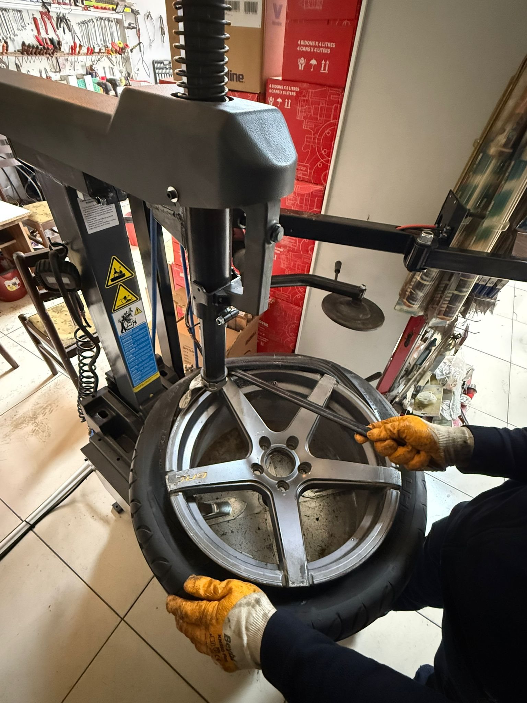
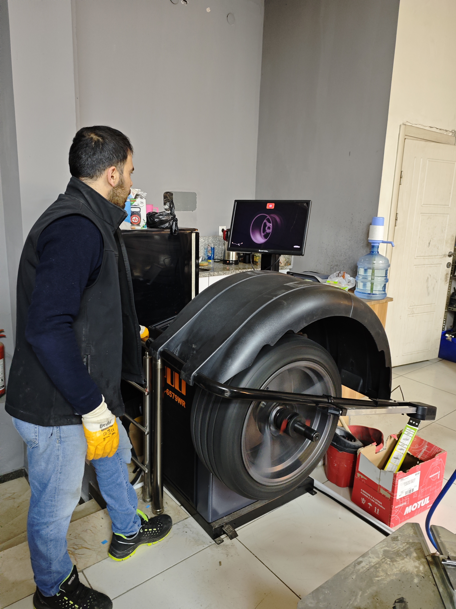
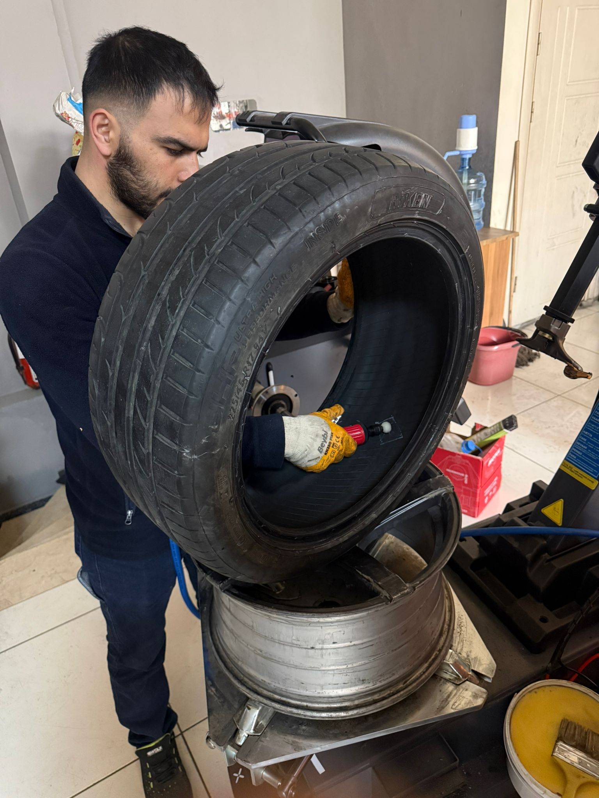

Eskişehir Tepebaşı'nda Profesyonel Lastik Hizmeti

Profesyonel makineler ile jantlarınıza zarar vermeden hızlı ve güvenli lastik değişimi yapılır.

Titreşimsiz ve konforlu sürüş için hassas balans ayarı yapılır.

Patlak ve hasarlı lastikler profesyonel şekilde onarılır.
Adres: Bahçelievler Mah. Prof. Dr. Orhan Oğuz Cad. No: 89/5
Telefon: 0531 728 43 99